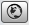
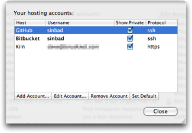
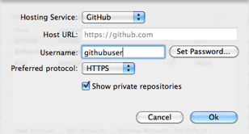

Hosted Repositories
SourceTree integrates with Bitbucket, GitHub and Kiln to enable you to easily view your repositories that are hosted on these services, clone them, navigate to their project pages on the web, and create new repositories on those services if you wish too.
You can access the Hosted Projects view several ways:
- Click the 'Hosted Projects' button on the Bookmarks window toolbar, or
- Use the 'Show Hosted Repositories' menu option
- Press Shift-Cmd-H
- When you need to complete an URL and you see this button next to the field: 
The Hosted Repositories View

The hosted repositories view collects together all the repositories you have on all the services you have configured. It shows you the names and descriptions, the service on which the project is hosted, and optionally a 'padlock' symbol which indicates that the repository is private (not publicly visible).
To begin with, your list will be blank, so you will want to click the 'Edit Accounts' button at the top-right to configure your accounts.
The Accounts List

This is where you configure all your hosting accounts. You can configure as many as you like, there is no limit, and you can configure more than one account per service if you have multiple identities. You can set one of these accounts to be the default using the Set Default button, so that when you choose to create a new hosted repository, that account is pre-selected. The default account is shown in bold text.
Creating / editing Accounts

After clicking Add Account or editing an existing entry, you will see the sheet above. It's fairly self-explanatory; for GitHub and Bitbucket only a username is required (and you can wait to be prompted for the password on first use or click the 'Set Password' button yourself - also useful for changing the password). For Kiln, you also need to provide the 'Host URL' of your Kiln installation, since each one is uniquely assigned to you.
The 'Preferred Protocol' option determines which type of remote URL is used when you clone from repositories on this account; either HTTPS or SSH.
Finally, the 'Show Private Repositories' option determines whether you want to authenticate against this account to see private repositories. If you uncheck this box you can actually add other people's accounts to your list (and set no password), in order to see their public repositories in your list.
Cloning a Hosted Repository
You can clone from any hosted repository simply by double-clicking on the entry in the list. Alternatively, you can right-click on the entry and select 'Clone...'. Also notice that on this context menu there are various other options, to navigate to the project on the web or to copy URLs to the clipboard for example.
Using a Hosted Repository as a remote
As mentioned earlier, you can open the hosted repositories list whenever you see a button that looks like this:
One such place is in the remote configuration in the Settings pane for a given local repository. You can use that to select a hosted repository as a remote and get the URL automatically, instead of having to enter it or copy/paste it manually.
Creating a new Hosted Repository
You can create a new repository from the Hosted Repositories list just by clicking the 'Create New Repository' button at the bottom-left. You can do this anywhere that you can launch the list from, so for example to create a new hosted version of a new local repository, you'd simply have to open the Settings, click Add in the remotes section, click the 'world' button and Create New Repository from there. You never have to even leave the SourceTree repository view!
See also
Adding your existing local source folders
Creating a blank repository
Organising your bookmarks